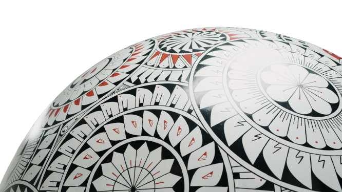

La Técnica de Mata Ortiz
La zona arqueológica de Paquimé está localizada en el municipio de Casas Grandes, Chihuahua, México. Fue declarado Patrimonio de la Humanidad por la UNESCO en 1998. La expresión artística sobre cerámica comenzó en el periodo de 1660 a 1821.
Las vajilla cerámicas actuales de Paquimé están inspiradas en las vasijas que fueron encontradas en la zona arqueológica. Estas piezas, de acuerdo a los arqueólogos, formaron parte de las ofrendas en los honores funerales de los habitantes de Paquimé.
Cinco siglos después de que Paquimé quedara despoblado, los habitantes de Mata Ortiz, un pequeño pueblo cerca de Paquimé, retomaron las técnicas artísticas y el estilo cerámico de la cultura de Casas Grandes. Hoy día, las artesanías que elaboran son parte de su identidad y una manera de generar recursos económicos.
La cerámica arqueológica de Paquimé se caracteriza por la presencia de pequeñas vasijas de formas convencionales y en algunos casos antropomorfas y zoomorfas que se decoran en su superficie con motivos geométricos, grecas, formas humanas y animales pintadas en colores ocres y negros sobre blanco y crema. antecedentes. Para pintar las vasijas de barro, los artistas utilizan pinceles hechos con cabello humano y los colores se obtienen de minerales locales.
